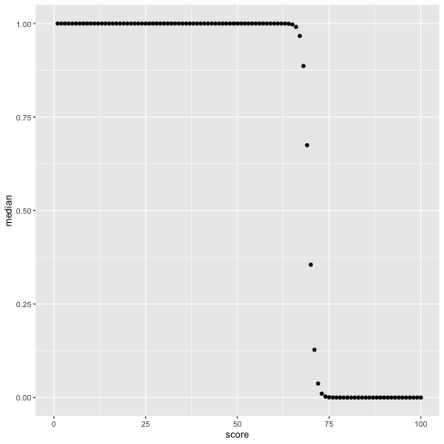

混合二項分布の推定
math r stanTable of Contents
#+File Created:
#+Last Updated:
混合二項分布の解析を通じて, cmdstanr の簡単な使い方をまとめておく.
1 二項分布
二項分布: 1回当りの成功確率を \(p\) とし, 試行回数 \(M\), そのうちの成功回数が \(y\) 回である確率 \(P(y)\) は
$$
P(y) = {}_M \mathrm{C}_{y} p^{y} (1-p)^{M-y}
$$
これを以下のように書くことにしよう.
$$
y \sim binomial(M,p)
$$
例: テストの点数分布
100 点満点のテストの場合 \(M=100\)
テストの得点を \(y\) とすると
$$
y \sim binomial(100,p)
$$
未知パラメータは \(p\) (0 から 1 まで)
テストの得点データから \(p\) の値(分布)を求めるのがよくある問題設定.
注: \(p\) は 0 から 1 までなので, 別の変数 \(x\) との関係がみたいときなどは \(p = 1/(1+\exp(-a - b x))\) 的な変換がよくなされる.
2 混合二項分布の推定
2.1 混合二項分布の式
混合二項分布(あるのか？ ネットで調べても出てこないけど)は,
２つ以上の二項分布がある割合(\(\alpha\)) で足し合わされたもの.
$$
y \sim \alpha \times binomial(y|100,p_1) + (1-\alpha) \times binomial(y|100,p_2)
$$
こんな感じで書ける(はず). \(\alpha\) が混合比と呼ばれるパラメータ
(混合正規分布(これはネットで調べるとたくさん出てくる)からの類推).
データ \(y\) は \(N\) 個あってそれぞれ独立だから, 同時確率は上の式の掛け算でよい.
普通は同時確率の対数をとって掛け算 –> 足し算にしてから計算する.
この値の最大値をとるパラメータ \(p_1\), \(p_2\) を求めるのが最尤法.
\(p_1\), \(p_2\) の分布を求めるのがベイズ推定.
2.2 混合二項分布の例
テストのため, R で混合二項分布に従う乱数を生成してみる.
\(\alpha = 0.6\), \(p_1 = 0.55\), \(p_2 = 0.82\) とする混合二項分布から \(N=100\) 個の乱数を作成する
(速度は気にしないのでループを使って書く).
1: mix_bin <- function(alpha, N, p1, p2) { 2: r <- runif(1,0,1) 3: if(r < alpha) { 4: l <- 0 5: y <- rbinom(1,N,p1) 6: }else { 7: l <- 1 8: y <- rbinom(1,N,p2) 9: } 10: return(c(y,l)) 11: } 12: N <- 100 13: alpha <- 0.6 14: p1 <- 0.55 15: p2 <- 0.82 16: 17: Num <- 100 18: ys <- c() 19: ls <- c() 20: for(i in 1:Num) { 21: ret <- mix_bin(alpha,N,p1,p2) 22: y <- ret[1] 23: l <- ret[2] 24: ys <- c(ys,y) 25: ls <- c(ls,l) 26: } 27: #print(ys) 28: 29: df <- data.frame(score=ys, label=ls) 30: head(df) 31: 32: write.table(df,'mix_biom_test.csv',sep=',', quote=F,row.names=F,col.names=T)
score label 1 76 1 2 80 1 3 88 1 4 45 0 5 67 0 6 79 1
図示してみる.
1: df <- read.csv('mix_biom_test.csv', header=TRUE) 2: library(ggplot2) 3: 4: g <- ggplot(data=df,mapping=aes(x=score,y=..density..)) + geom_density(alpha=0.4) + geom_histogram(alpha=0.2,color='black') + xlim(0,100) 5: fname <- 'mix_biom_test.png' 6: ggsave(file=fname, plot=g, dpi=70)
このデータを使って, \(\alpha\), \(p_1\), \(p_2\) の値(と分布)を推定したい.
2.3 Stan による MCMC 計算
まずは Stan コードを以下のように書いてみる.
data { int N; int Y[N]; } parameters { real<lower=0,upper=1> a; vector<lower=0,upper=1>[2] p; } model { for(n in 1:N) { target += log_sum_exp(log(a) + binomial_lpmf(Y[n] | 100, p[1]), log1m(a) + binomial_lpmf(Y[n] | 100, p[2])); } }
注: array の書き方が変わるらしい 13.12 Brackets array syntax | Stan Reference Manual
1: data { 2: int N; 3: array[N] int Y; 4: }
こんな感じ？ とりあえず今は旧版の書き方でいく.
暗黙のうちに p[ 1 ] < p[ 2 ] を期待しているが, プログラム上でこの制約を定義できていないので
値がうまく計算できなくなることがある.
改良する.
p の値を ordered にしたいが, ordered は値の範囲を指定できない.
Stan でパラメータに大小関係の制約をつける - ほくそ笑む
data { int N; int Y[N]; } parameters { real<lower=0,upper=1> a; # ordered<lower=0,upper=1>[2] p; # エラーとなってしまう！！ ordered[2] p_inv; } transformed parameters { real<lower=0, upper=1> p[2]; p[1] <- inv_logit(p_inv[1]); p[2] <- inv_logit(p_inv[2]); } model { for(n in 1:N) { target += log_sum_exp(log(a) + binomial_lpmf(Y[n] | 100, p[1]), log1m(a) + binomial_lpmf(Y[n] | 100, p[2])); } }
ロジスティック関数を使って 0 から 1 の範囲に無理やりする.
ついでに, generated quantities で, 得点 1 - 100 点に対して最初の分布に属する確率を計算するような式を追加する.
ここをうまく使うと, 知りたいことの分布(乱数列)を直接的に生成できる.
data { int N; int Y[N]; } parameters { real<lower=0,upper=1> a; ordered[2] p_inv; } transformed parameters { real<lower=0, upper=1> p[2]; p[1] = inv_logit(p_inv[1]); p[2] = inv_logit(p_inv[2]); vector[2] lp[N]; for(n in 1:N) { lp[n,1] = log(a) + binomial_lpmf(Y[n] | 100, p[1]); lp[n,2] = log1m(a) + binomial_lpmf(Y[n] | 100, p[2]); } } model { for(n in 1:N) { target += log_sum_exp(lp[n]); } } generated quantities { // データの予測分布を作る場合 //vector[N] pi; //for(n in 1:N) { // pi[n] = softmax(lp[n])[1]; //} // 1 - 100 点までを使う場合 vector[2] lx[100]; for(n in 1:100) { lx[n,1] = log(a) + binomial_lpmf(n | 100, p[1]); lx[n,2] = log1m(a) + binomial_lpmf(n | 100, p[2]); } vector[100] px; for(n in 1:100) { px[n] = softmax(lx[n])[1]; } }
rstan はもう古いらしいので, cmdstanr を使ってパラメータをベイズ推定する
Cmdstanr入門とreduce_sum()解説
1: library(cmdstanr) 2: df <- read.csv('mix_biom_test.csv', header=TRUE) 3: data <- list(N=nrow(df), Y=df$score) 4: model <- cmdstan_model('mix_biom_test.stan') 5: fit <- model$sample(data=data, chains=4, parallel_chains=4, seed=1234) 6: fit$save_output_files(dir="./", basename='mix_biom_test', timestamp=FALSE, random=FALSE)
Running MCMC with 4 parallel chains... Chain 1 Iteration: 1 / 2000 [ 0%] (Warmup) Chain 1 Iteration: 100 / 2000 [ 5%] (Warmup) Chain 1 Iteration: 200 / 2000 [ 10%] (Warmup) Chain 1 Iteration: 300 / 2000 [ 15%] (Warmup) Chain 1 Iteration: 400 / 2000 [ 20%] (Warmup) .... Chain 4 Iteration: 1800 / 2000 [ 90%] (Sampling) Chain 4 Iteration: 1900 / 2000 [ 95%] (Sampling) Chain 1 Iteration: 2000 / 2000 [100%] (Sampling) Chain 2 Iteration: 2000 / 2000 [100%] (Sampling) Chain 3 Iteration: 2000 / 2000 [100%] (Sampling) Chain 4 Iteration: 2000 / 2000 [100%] (Sampling) Chain 1 finished in 0.7 seconds. Chain 2 finished in 0.6 seconds. Chain 3 finished in 0.6 seconds. Chain 4 finished in 0.6 seconds. All 4 chains finished successfully. Mean chain execution time: 0.6 seconds. Total execution time: 0.8 seconds.
2.4 Stan 計算結果の表示(1) 結果 summary
結果ファイルの読み込みと基本的な情報の書き出し
1: #df <- read.csv('mix_biom_test.csv', header=TRUE) 2: #head(df) 3: library(cmdstanr) 4: files <-c('mix_biom_test-1.csv', 5: 'mix_biom_test-2.csv', 6: 'mix_biom_test-3.csv', 7: 'mix_biom_test-4.csv') 8: fit <- as_cmdstan_fit(files) 9: fit$summary(c("a","p")) 10: fit$summary(c("px[1]","px[2]","px[3]","px[4]","px[5]","px[6]"))
# A tibble: 3 × 10 variable mean median sd mad q5 q95 rhat ess_bulk ess_tail <chr> <dbl> <dbl> <dbl> <dbl> <dbl> <dbl> <dbl> <dbl> <dbl> 1 a 0.549 0.549 0.0493 0.0505 0.469 0.631 0.999 2972. 2834. 2 p[1] 0.546 0.546 0.00680 0.00676 0.535 0.557 1.00 2517. 2658. 3 p[2] 0.819 0.819 0.00587 0.00597 0.809 0.828 1.00 4432. 3389. # A tibble: 6 × 10 variable mean median sd mad q5 q95 rhat ess_bulk ess_tail <chr> <dbl> <dbl> <dbl> <dbl> <dbl> <dbl> <dbl> <dbl> <dbl> 1 px[1] 1 1 0 0 1 1 NA NA NA 2 px[2] 1 1 0 0 1 1 NA NA NA 3 px[3] 1 1 0 0 1 1 NA NA NA 4 px[4] 1 1 0 0 1 1 NA NA NA 5 px[5] 1 1 0 0 1 1 NA NA NA 6 px[6] 1 1 0 0 1 1 NA NA NA
rhat < 1.1 なので収束は問題なし.
\(a = 0.55\) (\(0.47 < a < 0.63\)) # 実際は 0.6 なので微妙かも…
\(p_1 = 0.55\) これは結構ぴったり
\(p_2 = 0.82\) これもぴったりかも.
2.5% - 97.5% の quantile を知りたいときは, 自分で関数を作る必要がある.
1: library(cmdstanr) 2: files <-c('mix_biom_test-1.csv', 3: 'mix_biom_test-2.csv', 4: 'mix_biom_test-3.csv', 5: 'mix_biom_test-4.csv') 6: fit <- as_cmdstan_fit(files) 7: q95 <- function(x) quantile(x, probs=c(0.025, 0.25, 0.5, 0.75, 0.975)) # 自作関数 8: # 自作関数 q95 を含むいくつかの代表値を表示させる 9: fit$summary(c("a","p"), 'mean', 'sd', 'median', q95, 'rhat')
# A tibble: 3 × 10 variable mean sd median `2.5%` `25%` `50%` `75%` `97.5%` rhat <chr> <dbl> <dbl> <dbl> <dbl> <dbl> <dbl> <dbl> <dbl> <dbl> 1 a 0.549 0.0493 0.549 0.454 0.514 0.549 0.582 0.645 0.999 2 p[1] 0.546 0.00680 0.546 0.533 0.542 0.546 0.551 0.560 1.00 3 p[2] 0.819 0.00587 0.819 0.807 0.815 0.819 0.823 0.830 1.00
RStan の資産を使いたいとき
1: library(rstan) 2: files <-c('mix_biom_test-1.csv', 3: 'mix_biom_test-2.csv', 4: 'mix_biom_test-3.csv', 5: 'mix_biom_test-4.csv') 6: rstanfit <- rstan::read_stan_csv(files) # rstan の fit object が作成できた. これを使う. 7: options(width=180) 8: summary(rstanfit)$summary[c('px[60]','px[90]'),] 9: # 書き出す確率を変えたいとき 10: # summary(rstanfit, probs=c(0.1,0.5,0.9))$summary[c('px[60]','px[90]'),] 11: summary(rstanfit, pars=c('a','p'))$summary
mean se_mean sd 10% 50% 90% n_eff Rhat
px[60] 9.999951e-01 7.913990e-08 5.046006e-06 9.999890e-01 9.99997e-01 9.999990e-01 4065.411 0.999612
px[90] 3.111517e-12 9.539589e-14 4.091990e-12 4.786479e-13 1.83679e-12 6.993533e-12 1839.966 1.001073
mean se_mean sd 2.5% 25% 50% 75% 97.5% n_eff Rhat
a 0.5490803 8.938196e-04 0.049338188 0.4536839 0.5143332 0.548623 0.5823223 0.6453881 3046.959 0.9991678
p[1] 0.5463507 1.357109e-04 0.006801235 0.5326670 0.5417878 0.546397 0.5508498 0.5596871 2511.574 1.0010315
p[2] 0.8186793 8.864559e-05 0.005869632 0.8069147 0.8146545 0.818802 0.8226557 0.8300441 4384.372 0.9994753
2.5 Stan 計算結果の表示(2) 図示 bayesplot
パラメータの分布
fit$draws で MCMC データを extract する.
mcmc_dens
1: library(cmdstanr) 2: library(ggplot2) 3: files <-c('mix_biom_test-1.csv', 4: 'mix_biom_test-2.csv', 5: 'mix_biom_test-3.csv', 6: 'mix_biom_test-4.csv') 7: fit <- as_cmdstan_fit(files) 8: p <- bayesplot::mcmc_dens(fit$draws(c('a','p'))) 9: # p <- bayesplot::mcmc_hist(fit$draws(c('a','p'))) # ヒストグラムを描く場合 10: fname <- 'mix_biom_test_dens.png' 11: ggsave(file=fname, plot=p, dpi=70)
chain ごとの density
mcmc_dens_overlay
1: library(cmdstanr) 2: library(ggplot2) 3: files <-c('mix_biom_test-1.csv', 4: 'mix_biom_test-2.csv', 5: 'mix_biom_test-3.csv', 6: 'mix_biom_test-4.csv') 7: fit <- as_cmdstan_fit(files) 8: p <- bayesplot::mcmc_dens_overlay(fit$draws(c('a','p'))) 9: fname <- 'mix_biom_test_dens_overlay.png' 10: ggsave(file=fname, plot=p, dpi=70)
ヒストグラム(対角線上)及びパラメータ間の相関
mcmc_pairs
1: library(cmdstanr) 2: library(ggplot2) 3: files <-c('mix_biom_test-1.csv', 4: 'mix_biom_test-2.csv', 5: 'mix_biom_test-3.csv', 6: 'mix_biom_test-4.csv') 7: fit <- as_cmdstan_fit(files) 8: p <- bayesplot::mcmc_pairs(fit$draws(c('a','p'))) 9: fname <- 'mix_biom_test_pairs.png' 10: ggsave(file=fname, plot=p, dpi=70)

一応 traceplot も見ておく
1: library(cmdstanr) 2: library(ggplot2) 3: files <-c('mix_biom_test-1.csv', 4: 'mix_biom_test-2.csv', 5: 'mix_biom_test-3.csv', 6: 'mix_biom_test-4.csv') 7: fit <- as_cmdstan_fit(files) 8: p <- bayesplot::mcmc_trace(fit$draws(c('a','p'))) 9: fname <- 'mix_biom_test_trace.png' 10: ggsave(file=fname, plot=p, dpi=70)
データと推定結果の重ね合わせ.
\(\alpha = 0.55\) とする.
1: library(ggplot2) 2: d <- read.csv('mix_biom_test.csv',header=TRUE) 3: 4: p <- ggplot(data=d,mapping=aes(x=score,y=..density..)) 5: p <- p + geom_histogram(fill='white',color='black') 6: p <- p + geom_density(fill='black',alpha=0.3) 7: p <- p + xlim(0,100) 8: 9: x <- seq(0,100, by=1) 10: alpha <- 0.55 11: p1 <- 0.55 12: y1 <- alpha * dbinom(x, 100, p1) 13: dy1 <- data.frame(x=x,y1=y1) 14: p <- p + geom_line(data=dy1,mapping=aes(x=x,y=y1),colour='green',size=2, linetype='dashed') 15: 16: p2 <- 0.82 17: y2 <- (1 - alpha) * dbinom(x, 100, p2) 18: dy2 <- data.frame(x=x,y2=y2) 19: p <- p + geom_line(data=dy2,mapping=aes(x=x,y=y2),colour='blue',size=2, linetype='dashed') 20: 21: fname <- 'mix_binom_test_hist.png' 22: ggsave(plot=p,file=fname,dpi=70)
score(1 〜 100) が黄緑のクラスタに入っている確率を図示する.
1: library(cmdstanr) 2: files <-c('mix_biom_test-1.csv', 3: 'mix_biom_test-2.csv', 4: 'mix_biom_test-3.csv', 5: 'mix_biom_test-4.csv') 6: fit <- as_cmdstan_fit(files) 7: mat <- fit$summary(c("px"), "median","rhat") 8: mat$score <- 1:100 9: 10: library(ggplot2) 11: p <- ggplot(data=mat) + geom_point(mapping=aes(x=score, y=median)) + xlim(0,100) 12: fname <- 'mix_biom_test_pred.png' 13: ggsave(file=fname, plot=p, dpi=70)
